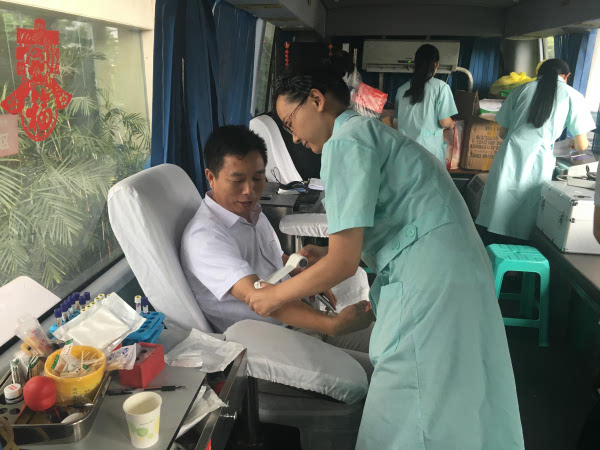

-
简办婚宴捐资百万 企业家林玉盛带头移风易俗
2月11日，倡导移风易俗签名仪式举行。图为市委办党员在“移风易俗倡文明 机关党员走前头”倡议书上签名。 本报记者 陈斌 摄本报讯 2月8日，家在秀屿区东庄镇后江村的企业家林玉盛，简办儿子婚... <
-

聚焦我市10名造血干细胞爱心捐献者风采
造血干细胞移植是治疗恶性血液病的一种有效途径和重要手段。造血干细胞捐献是一种无私捐献血液，挽救患者生命的高尚行为，也是一项弘扬人道精神、造福人类社会的崇高事业。自2001年中国红十字会受政府委...
-

黄文谦百岁寿辰再行善举
2月11日，度尾镇中峰村村部上演了感人的一幕。当天是爱心老人黄文谦办100岁“寿宴”的日子，也是他捐资做慈善的日子。而他所捐的善款，正是从他做寿不摆酒席中省下的。...
-

宋代三种笔记中的莆田理学家方翥趣闻轶事
莆田方姓古代共有进士263人，进士人数居陈姓、林姓之后，名列第三。两宋之时，方氏科举盛况空前，且儒学藏书兼善，以世家巨族著称于东南，为宋代兴化府乃至整个福建地区首屈一指的文学世家。出现“方氏六桂”方仁逸、方...
-

“与犬共舞”护国门——记莆田边检站特殊“警员”
“米奇，上！”2月8日早晨6点半，寒风刺骨，和往常一样，在莆田边防检查站监护中队副队长李超的指挥下，德国牧羊犬“米奇”瞬间就跨越了营区外围的各种障碍物，整个过程不到10秒。春节临近，边防检查站...
-
暖心的“90后”郑振宇
在莆田市社会福利中心，晚餐时间刚过，大厅里满是老人小孩。有的孩子嘴角带着饭粒，嬉戏打闹；有的孩子坐在角落看动画片，沉默不语。走廊上的一个个小房间里，摆着几张带护栏的木床，每间都配有一个护工照顾孩子们的饮食起...